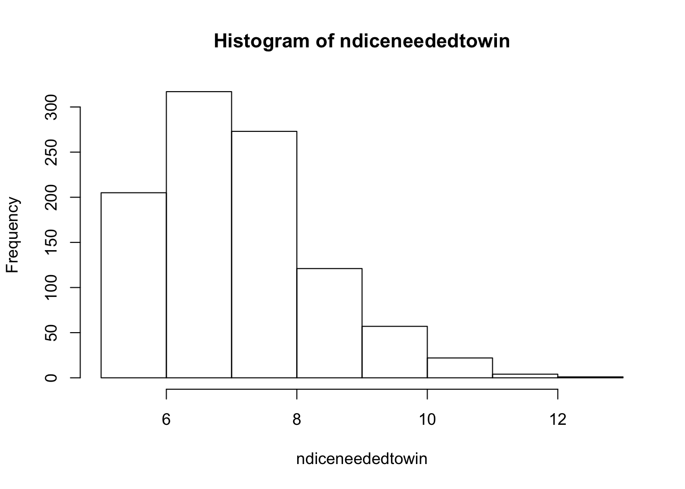
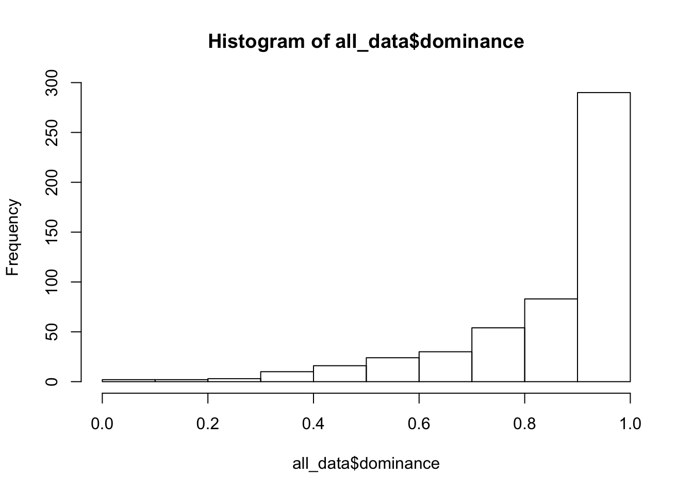
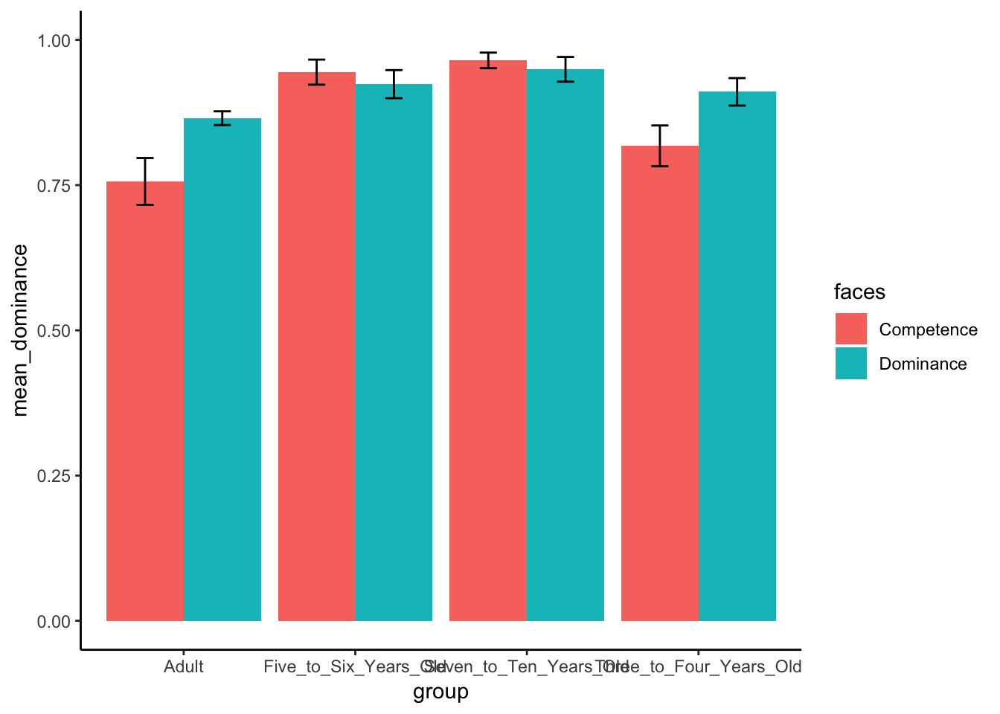

AllNumbers <- 1:100
for(AllNumbers in 1:100)
if (AllNumbers %% 3 == 0 && AllNumbers %% 5 == 0) {print('FizzBuzz')
} else if (AllNumbers %% 3 == 0) {print('Fizz')
} else if (AllNumbers %% 5 == 0) {print('Buzz')
} else {print(AllNumbers)}## [1] 1
## [1] 2
## [1] "Fizz"
## [1] 4
## [1] "Buzz"
## [1] "Fizz"
## [1] 7
## [1] 8
## [1] "Fizz"
## [1] "Buzz"
## [1] 11
## [1] "Fizz"
## [1] 13
## [1] 14
## [1] "FizzBuzz"
## [1] 16
## [1] 17
## [1] "Fizz"
## [1] 19
## [1] "Buzz"
## [1] "Fizz"
## [1] 22
## [1] 23
## [1] "Fizz"
## [1] "Buzz"
## [1] 26
## [1] "Fizz"
## [1] 28
## [1] 29
## [1] "FizzBuzz"
## [1] 31
## [1] 32
## [1] "Fizz"
## [1] 34
## [1] "Buzz"
## [1] "Fizz"
## [1] 37
## [1] 38
## [1] "Fizz"
## [1] "Buzz"
## [1] 41
## [1] "Fizz"
## [1] 43
## [1] 44
## [1] "FizzBuzz"
## [1] 46
## [1] 47
## [1] "Fizz"
## [1] 49
## [1] "Buzz"
## [1] "Fizz"
## [1] 52
## [1] 53
## [1] "Fizz"
## [1] "Buzz"
## [1] 56
## [1] "Fizz"
## [1] 58
## [1] 59
## [1] "FizzBuzz"
## [1] 61
## [1] 62
## [1] "Fizz"
## [1] 64
## [1] "Buzz"
## [1] "Fizz"
## [1] 67
## [1] 68
## [1] "Fizz"
## [1] "Buzz"
## [1] 71
## [1] "Fizz"
## [1] 73
## [1] 74
## [1] "FizzBuzz"
## [1] 76
## [1] 77
## [1] "Fizz"
## [1] 79
## [1] "Buzz"
## [1] "Fizz"
## [1] 82
## [1] 83
## [1] "Fizz"
## [1] "Buzz"
## [1] 86
## [1] "Fizz"
## [1] 88
## [1] 89
## [1] "FizzBuzz"
## [1] 91
## [1] 92
## [1] "Fizz"
## [1] 94
## [1] "Buzz"
## [1] "Fizz"
## [1] 97
## [1] 98
## [1] "Fizz"
## [1] "Buzz"Snakes and Ladders is a board game comprised of 25 spaces, numbered 1 to 25. Certain spaces contain either the bottom or top of either a snake or a ladder. The winner of the game is the individual who reaches the space 25. Players either go down a snake (from the head to the tail) or go up a ladder depending on the number of spaces the individual is made to move. For example, if an individual lands on a ladder at space 3, he or she will automatically move to position 11. There are nine ladders and ten snakes on a board. The individual is given a certain number of spaces to move by rolling a six-sided dice.
First, the board must be set up properly. The movements that can occur either due to the snakes or the ladders are as follows, whereby the first number within the parenthesis is the starting tile and the second number within the parenthesis is the ending tile:
(3, 11),
(10, 12),
(9, 18),
(6, 17),
(22, 20),
(24, 16),
(19, 8),
(14, 4)ladders.df <- data.frame(
x = c(3,10,9,6),
y = c(11,12,18,17))
snakes.df <- data.frame(
x = c(22,24,19,14),
y = c(20,16,8,4))
ndiceneededtowin <- vector("numeric", length = 1000)
for(i in 1:1000){
currentposition <- 0
ndice <- 0
nsnakes <- 0
nladders <- 0
ntrials = 1000
while(currentposition < 25) {
dice <- sample(1:6, size = 1, replace = TRUE)
currentposition <- currentposition + dice
ndice <- ndice + 1
if(any(ladders.df$s %in% currentposition)) {
currentposition <- ladders.df$e[ladders.df$s %in% currentposition]
ladders <- ladders + 1}
if(any(snakes.df$s %in% currentposition)) {currentposition <- snakes.df$e[snakes.df$s %in% currentposition]
nsnakes<- nsnakes + 1}}
x<- ndice
ndiceneededtowin[i] <- mean(x, na.rm = TRUE)
}
print(ndiceneededtowin)## [1] 7 6 7 8 10 7 9 7 8 10 8 10 6 8 6 7 7 8 8 6 6 11 8
## [24] 9 8 9 6 10 6 6 8 8 11 6 6 8 7 9 8 9 7 8 6 6 6 8
## [47] 8 7 9 6 8 6 6 6 7 7 8 9 8 8 7 7 6 6 7 7 6 8 8
## [70] 8 9 7 7 10 8 7 10 6 8 8 7 12 7 7 7 8 8 5 6 8 7 6
## [93] 8 8 8 6 5 8 11 9 9 9 8 11 6 6 6 8 8 10 9 8 7 7 8
## [116] 8 8 9 7 7 6 6 8 6 7 7 10 8 9 7 6 8 8 7 7 7 9 7
## [139] 7 7 7 10 6 7 8 7 5 8 7 6 8 6 7 8 6 8 7 11 8 6 8
## [162] 7 9 7 11 7 7 8 9 10 8 6 9 6 7 9 7 12 7 6 8 6 8 8
## [185] 11 7 6 7 8 5 9 8 8 8 8 6 7 9 6 7 8 6 7 8 8 8 7
## [208] 7 10 9 10 8 7 7 8 8 8 7 6 9 7 7 8 10 6 7 6 9 9 8
## [231] 6 8 7 6 8 7 7 6 8 6 8 6 7 7 8 7 8 8 7 6 7 8 7
## [254] 10 5 8 6 6 7 7 5 6 6 7 6 9 9 7 8 8 7 8 7 10 8 8
## [277] 8 7 7 7 8 5 7 8 9 9 7 6 12 8 8 6 7 6 11 7 8 9 8
## [300] 9 8 9 8 6 7 11 9 7 10 8 7 7 7 7 10 7 8 7 10 8 7 9
## [323] 7 8 7 8 7 8 7 7 7 9 7 7 10 9 9 7 7 8 7 8 8 7 7
## [346] 7 9 6 9 8 7 8 7 8 9 6 7 6 6 5 8 6 8 7 7 8 7 8
## [369] 5 7 7 6 7 13 5 6 8 9 8 6 5 10 7 7 6 5 10 8 7 6 8
## [392] 6 8 11 6 6 9 8 8 7 7 7 8 6 8 7 7 9 6 6 7 10 10 7
## [415] 7 9 10 8 7 6 9 7 8 7 8 10 9 8 6 8 9 6 6 9 7 7 7
## [438] 7 11 7 8 8 7 10 7 8 6 6 8 7 8 7 8 6 7 7 10 9 8 9
## [461] 7 6 8 6 8 10 7 9 7 9 8 6 7 9 8 7 6 8 7 7 8 7 7
## [484] 7 10 9 8 7 7 8 7 9 7 7 7 8 9 7 8 6 5 8 8 10 7 6
## [507] 9 8 6 6 8 7 8 8 7 10 8 9 7 6 9 7 7 6 9 5 8 6 9
## [530] 8 5 8 7 8 8 7 8 8 7 8 7 7 10 6 5 7 9 6 7 7 5 6
## [553] 8 6 6 8 8 10 5 7 7 10 7 7 8 7 9 8 7 7 7 8 9 10 7
## [576] 7 9 7 11 7 6 7 8 6 8 10 7 8 7 9 7 10 7 8 7 7 9 8
## [599] 9 7 9 9 6 9 6 8 7 10 11 7 9 5 7 8 7 9 7 6 10 8 10
## [622] 9 7 8 5 8 7 5 8 6 7 6 6 9 7 9 8 8 6 6 6 7 7 8
## [645] 9 8 7 10 7 5 7 8 9 6 7 7 8 7 7 6 8 8 7 8 6 6 11
## [668] 8 8 9 11 7 9 5 9 7 7 8 9 6 5 7 7 8 8 8 7 7 6 7
## [691] 7 9 6 7 6 11 6 9 7 9 11 9 8 8 6 8 8 7 10 6 6 6 8
## [714] 8 5 8 6 6 9 11 9 8 7 8 7 10 11 7 8 8 7 6 7 10 6 6
## [737] 7 8 8 8 7 6 10 7 8 7 10 8 7 7 7 7 8 8 7 8 7 7 9
## [760] 7 8 8 6 7 6 8 10 6 9 7 9 7 8 7 6 9 8 10 10 8 7 7
## [783] 8 7 7 5 7 9 7 8 8 8 11 6 9 7 12 7 7 6 6 7 7 6 9
## [806] 8 7 6 8 7 9 6 8 6 9 7 9 8 7 7 9 6 6 7 7 8 9 8
## [829] 7 7 9 7 9 5 8 10 8 8 10 7 8 8 8 9 7 9 8 7 8 8 8
## [852] 8 7 7 7 7 8 7 8 10 8 6 9 10 9 8 6 8 11 9 7 8 6 6
## [875] 8 8 10 7 6 6 7 7 8 8 7 6 7 8 7 7 7 8 7 7 9 7 5
## [898] 7 7 8 8 8 5 9 7 7 7 6 9 8 6 8 8 7 5 5 6 8 6 7
## [921] 6 7 8 10 6 7 7 6 9 8 7 8 7 6 7 9 11 9 7 8 8 7 7
## [944] 8 5 8 9 6 9 9 8 6 8 7 7 6 8 6 8 7 6 8 8 7 7 10
## [967] 9 7 8 7 8 7 8 7 8 6 7 5 8 8 6 7 6 8 9 9 6 7 6
## [990] 7 7 7 10 6 7 8 6 5 9 9hist(ndiceneededtowin)
meanndiceneededtowin <- mean(ndiceneededtowin)
c(meanndiceneededtowin)## [1] 7.561In human adults, an observee is analyzed by an observer whom automatically attributes a trait to the observee on the basis of his or her facial composition (Cogsdill et al., 2014). Dominance, competence, and trustworthiness are traits that are processed in this manner. The function of this automatic analysis is two-fold. In less than fifty milliseconds (Todorov, Pakrashi, & Oosterhof, 2009), an observer can estimate the physical health (Zebrowitz & Rhodes, 2004) and emotional state of an observee (Said, Sebe, & Todorov, 2009). The capacity to conduct such analyses allows for an individual to orient themselves in myriad social environments. The question of primary interest in this research involves whether or not children hold the capacity to attribute traits to an observee on the basis of facial makeup. If children hold an adult-like capacity to attribute traits to facial structure, then this may infer that this ability arises early in childhood development and is integral for operating within early life (Cogsdill et al., 2014). Contrarily, if research finds a statistically significant difference in face-to-trait attribution between children and adults, wherein children do not attribute traits to computationally modelled, representative faces of these traits, then it can be said that this ability arises late in childhood development and is not integral for operating in early life. In addition, this implies that repeated social exposure is needed for this processing ability in to form (Cogsdill et al., 2014). Prior to experimentation, it was hypothesized that children hold the same or similar capacity as adults to attribute traits on the basis of facial composition (Cogsdill et al., 2014).
The sample of these experiments involved 213 children, ranging in age from three to ten, and 301 adults. Children were further separated by age group, with three additional groups being made: 3- to 4-year-olds, 5- to 6- year-olds, and 7- to 10- year olds. It is necessary to note that children were made to complete the trials in either a laboratory or a museum, while adults were made to take the surveys online. In future studies, this discrepancy should be eliminated and both children and adults should be made to conduct trials in the same environment in order to eliminate any confounds. In order to assess whether children aged three to ten hold the same capacity as adults to correctly attribute “mean/nice” trait designations to faces that were computationally modelled as either trustworthy, dominant, or competent, participants were subjected to three blocks consisting of nine trials in the first experiment. Each trait (competent, dominant, and trustworthy) was modelled with two faces with either high or low perception of the trait. For example, of the two faces used to model trustworthiness, one is perceived as more indicative of a trustworthy face by adults than the other.
In each of these twenty-seven trials, faces were randomly interspersed and participants were made to choose a face after being asked a question such as “which of these faces is most nice” (Cogsdill et al., 2014). Experiment two assayed whether children could accurately attribute “mean/nice” evaluations to dominant and competent faces only. As such, participants were subject to one block of trials and were made to choose one face out of four after being asked a short question such as ““which of these faces is most nice” (Cogsdill et al., 2014). Following both experiments, the choices of all four groups (the three child groups and one adult group) were compared to the predetermined traits of the computationally modelled faces in order to operationalize whether faces low and high for a given trait were correctly attributed to the correct face. These results were operationalized from 0 to 1, with 0 indicating that no faces were correctly attributed as either high or low for certain trait (Cogsdill et al., 2014). For example, a mean score of .5 for a group would indicate the faces modelled as high in regards trustworthiness and expected to receive a “nice” response and faces modelled as low in regards to trustworthiness and expected to receive a “mean” response were correctly attributed as “mean” or “nice” 50% of the time in a given age group (Cogsdill et al., 2014).
As per Experiment One, it was determined that children held the capacity to accurately make trait inferences on the basis of facial composition as young as the age group of 3- to 4- years old. In addition, children attributions of “mean/nice” better resembled adults face-to-trait attributions for faces computationally modelled as trustworthy (Cogsdill et al., 2014).
As per Experiment Two, the percentage of expected responses for a given face of either high or low for a specific trait ranged from 87 to 95% throughout each age group (Cogsdill et al., 2014). One can look to Figure 1 to observe that the adult group showed the lowest mean dominance measurement for competence. The mean dominance measurement for a group is indicative of the rate at which the age group correctly attributed a face as either high or low in regards to one trait. In addition, the mean dominance measurement for competence increased as the children age group’s increased in age (Cogsdill et al., 2014).
In order to further ascertain whether there had been significant main effects due to face trait type or age group or a significant interaction effect due to a face trait x main effect interaction, a 2 (face trait: dominance vs. competence) x 4 (age group: 3- to 4-year-olds vs 5- to 6- year-olds vs. 7- to 10- year olds vs. adults) between-subjects ANOVA was conducted. Main effects were seen for both age group, F(3, 506) = 10.804, p < .001, and face trait, F(1, 506) = 3.721, p = .054 and a significant interaction effect was seen for face trait and age group, F(3, 506) = 2.674, p < .05 (Cogsdill et al., 2014). To ascertain which group gave rise to significant main effects, group dominance consensus means were compared using the Sidak multiple comparison test. It was found that 7- to 10- year old group showed the a significantly greater mean dominance consensus score than did the 3- to 4- year old group (Cogsdill et al., 2014). In addition, adults did not display any significant difference in mean dominance consensus measurement when compared to 3- to 4- year olds. Lastly, adults were found to have significantly lower mean dominance consensus scores than both 7- to 10- year old and 5- to 6- year old age groups (Cogsdill et al., 2014).
Further one-way ANOVAs were conducted in order to ascertain whether participants were more consistent in their “mean” and “nice” evaluations in the trustworthiness condition than in either the “dominant” or “competent” conditions. Correspondingly, the evaluations for the “trustworthiness” condition was more consistant than in the other two conditions across all age groups (Cogsdill et al., 2014).
Given that children across all age groups had been able to accurately attribute “mean” and “nice” evaluations for high and low computationally modelled faces when compared to adult evaluations, it can be inferred that face-to-trait attributions are made early in life and do not require exhaustive social experience to come about (Cogsdill et al., 2014). A final note of interest in this research involves whether or not attractiveness serves as a confound for face-to-trait attributions. In previous research, it was found that when computationally modelled faces are altered in relative attractiveness while maintaining characteristic facial composition for a given trait, trait attribution is not affected (Todorov, Dotsch, et al., 2013).library(data.table)
all_data <- fread("cogsdill2014.csv")
library(summarytools)
view(dfSummary(all_data))
hist(all_data$dominance)
library(dplyr)
library(ggplot2)
plot_means <- all_data %>%
group_by(group,faces) %>%
summarise(mean_dominance = mean(dominance),
SEM = sd(dominance)/sqrt(length(dominance)))
ggplot(plot_means, aes(x=group, y=mean_dominance, group=faces, fill=faces))+
geom_bar(stat="identity", position="dodge")+
geom_errorbar(aes(ymin=mean_dominance-SEM, ymax=mean_dominance+SEM),
position=position_dodge(width=0.9),
width=.2)+
theme_classic()+
coord_cartesian(ylim=c(0,1))
Figure 1. Mean_Dominance vs. Group. Mean_dominance is a measure of the relative degree to which a given group attributed face trait with the characteristics of either “mean” or “nice” correctly. Prior to experimentation, two-dimensional pictures of faces were given traits “mean” or “nice” as per computational models. The measurement ranged from 0 to 1, wherein 0 shows no correct attribution of face trait and 1 shows perfect attribution of face trait.
library(xtable)
aov_out<-aov(dominance ~ group*faces, all_data)
summary_out<-summary(aov_out)
library(xtable)
knitr::kable(xtable(summary_out))| Df | Sum Sq | Mean Sq | F value | Pr(>F) | |
|---|---|---|---|---|---|
| group | 3 | 0.7507500 | 0.2502500 | 7.329435 | 0.0000811 |
| faces | 1 | 0.2926531 | 0.2926531 | 8.571356 | 0.0035687 |
| group:faces | 3 | 0.2746894 | 0.0915631 | 2.681742 | 0.0462228 |
| Residuals | 506 | 17.2764335 | 0.0341431 | NA | NA |
Table 1. 2 x 4 Between-Subjects ANOVA Table.
print(model.tables(aov_out,"means"), format="markdown")## Tables of means
## Grand mean
##
## 0.8762646
##
## group
## Adult Five_to_Six_Years_Old Seven_to_Ten_Years_Old
## 0.8522 0.93 0.9554
## rep 301.0000 73.00 56.0000
## Three_to_Four_Years_Old
## 0.863
## rep 84.000
##
## faces
## Competence Dominance
## 0.8366 0.8887
## rep 123.0000 391.0000
##
## group:faces
## faces
## group Competence Dominance
## Adult 0.76 0.87
## rep 36.00 265.00
## Five_to_Six_Years_Old 0.94 0.92
## rep 22.00 51.00
## Seven_to_Ten_Years_Old 0.96 0.95
## rep 22.00 34.00
## Three_to_Four_Years_Old 0.82 0.91
## rep 43.00 41.00means_to_compare <- all_data %>%
filter(group=="Three_to_Four_Years_Old")
t.test(dominance~faces, paired=FALSE, var.equal=TRUE, data=means_to_compare)##
## Two Sample t-test
##
## data: dominance by faces
## t = -2.1742, df = 82, p-value = 0.03257
## alternative hypothesis: true difference in means is not equal to 0
## 95 percent confidence interval:
## -0.178190941 -0.007912292
## sample estimates:
## mean in group Competence mean in group Dominance
## 0.8175581 0.9106098Table 2. Unpaired Two Sample T-Test for Age Group (3- to 4- Year Olds) as a Function of Mean Dominance Measurement
means_to_compare <- all_data %>%
filter(group=="Five_to_Six_Years_Old")
t.test(dominance~faces, paired=FALSE, var.equal=TRUE, data=means_to_compare)##
## Two Sample t-test
##
## data: dominance by faces
## t = 0.52312, df = 71, p-value = 0.6025
## alternative hypothesis: true difference in means is not equal to 0
## 95 percent confidence interval:
## -0.05819005 0.09958221
## sample estimates:
## mean in group Competence mean in group Dominance
## 0.9445000 0.9238039Table 3. Unpaired Two Sample T-Test for Age Group (5- to 6- Year Olds) as a Function of Mean Dominance Measurement
means_to_compare <- all_data %>%
filter(group=="Seven_to_Ten_Years_Old")
t.test(dominance~faces, paired=FALSE, var.equal=TRUE, data=means_to_compare)##
## Two Sample t-test
##
## data: dominance by faces
## t = 0.53662, df = 54, p-value = 0.5937
## alternative hypothesis: true difference in means is not equal to 0
## 95 percent confidence interval:
## -0.04206656 0.07281522
## sample estimates:
## mean in group Competence mean in group Dominance
## 0.9647273 0.9493529Table 4. Unpaired Two Sample T-Test for Age Group (7- to 10- Year Olds) as a Function of Mean Dominance Measurement
means_to_compare <- all_data %>%
filter(group=="Adult")
t.test(dominance~faces, paired=FALSE, var.equal=TRUE, data=means_to_compare)##
## Two Sample t-test
##
## data: dominance by faces
## t = -3.083, df = 299, p-value = 0.00224
## alternative hypothesis: true difference in means is not equal to 0
## 95 percent confidence interval:
## -0.17841327 -0.03938799
## sample estimates:
## mean in group Competence mean in group Dominance
## 0.7563333 0.8652340Table 5. Unpaired Two Sample T-Test for Age Group (Adults) as a Function of Mean Dominance Measurement
The mean dominance ratio measurement for each group was subjected to a 2 (face trait consensus: dominance vs. competence) x 4 (age group: 3- to 4-year-olds vs 5- to 6- year-olds vs. 7- to 10- year olds vs. adults) between-subjects ANOVA for re-analysis of the data found in Experiment 2 (Cogsdill et al., 2014). There was a main effect of age group, F(3, 506) = 7.329435, MSE = 0.2502500, p <.001. Mean dominance measurement for competence was lowest for the age group consisting of adults (0.7563333) and highest for the age group consisting of 7- to 10- year olds (0.9647273). There was a clear main effect of face trait consensus F(1,506) = 8.571356, MSE = 0.2926531, p<.004. The two-way interaction between face trait consensus and age group was significant, F(3,506) = 2.681742, MSE = 0.0915631, and p <.05. These main and interaction effects are consistent with those found in the original data analysis of Experiment 2.(Cogsdill et al., 2014), in which main effects were seen for both age group, F(3, 506) = 10.804, p < .001, and face trait, F(1, 506) = 3.721, p = .054 and a significant interaction effect was seen for face trait and age group, F(3, 506) = 2.674, p < .05. The F values attained through this reanalysis did not match those of the original data analysis. This may have resulted from the original experiments removing certain participants from the analysis if they had been outliers. An outlier test was not disclosed in this article. Nonetheless, the general trend for F values had been the same, with the main effect for face trait being higher than those of age group. In addition, the probability values for the re-analysis had been similar to that of the original data analysis, given that alpha was set at .05. Group x Face Trait interaction, F(3, 506) = 2.674, p < .05. In addition, the researchers stated that the main effect of face trait was statistically significant with a p of .054. The researchers rounded down the value of p to come to this conclusion. Mean dominance ratio measurement for dominance was lowest for the age group consisting of adults (0.8652340) and highest for the age group consisting of 7- to 10- year olds (0.9493529).This is consistent with the Sidak multiple comparison test conducted in Experiment 2 (Cogsdill et al., 2014), which found that adult’s judgement of faces varying in dominance, whether the face seems more mean or more nice, were less consistent than those of 5- to 6- and 7- to 10- year old age groups. In place of Sidak multiple comparison tests, unpaired two-sample t-Tests were used in this re-analysis in order to ascertain which age group showed significant variance from the population mean. Through a series of four unpaired t-tests, the age groups of children aged three to four and adults were found to significantly deviate from the population mean with t-values of -2.1742 and -3.083 respectively and p-values of 0.03257 and 0.00224 respectively.
Cogsdill, E. J., Todorov, A. T., Spelke, E. S., & Banaji, M. R. (2014). Inferring Character From Faces. Psychological Science,25(5), 1132-1139. doi:10.1177/0956797614523297
Said, C. P., Sebe, N., & Todorov, A. (2009). Structural resemblance to emotional expressions predicts evaluation of emotionally neutral faces. Emotion, 9, 260–264. doi:10.1037/a0014681
Todorov, A., Dotsch, R., Porter, J. M., Oosterhof, N. N., & Falvello, V. B. (2013). Validation of data-driven computational models of social perception of faces. Emotion, 13, 724–738. doi:10.1037/a0032335
Zebrowitz, L. A., & Rhodes, G. (2004). Sensitivity to “bad genes” and the anomalous face overgeneralization effect: Cue validity, cue utilization, and accuracy in judging intelligence and health. Journal of Nonverbal Behavior, 28, 167–185.